Docteur Strange (Stephen Strange) (Terre-616)
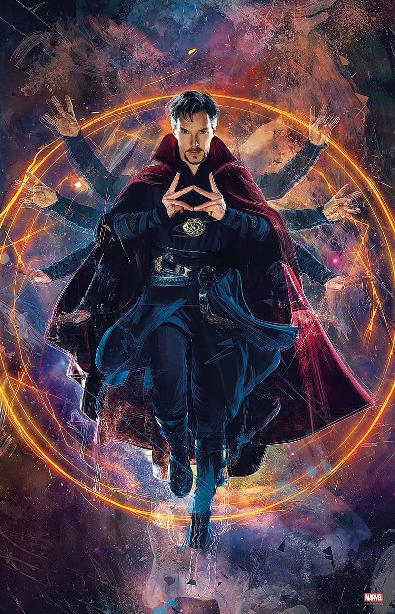
Origines :
Stephen est le fils de Eugene et Beverly Strange, et possède également une petite sœur âgée de deux ans de moins que lui, Donna Strange.
Lorsqu'il était enfant, un jeune apprenti en magie du nom de Karl Mordo (alias le Baron Mordo) qui avait entendu dire que Strange était destiné à devenir le prochain Sorcier Suprême, et jaloux à l'idée qu'il deviendrait meilleur que lui, décida d'assaillir le jeune garçon avec des démons.
Ce calvaire dura environ deux ans, après quoi ses parents donnèrent naissance à un petit garçon, Victor Strange.
Quand il n'avait que onze ans, sa petite sœur Donna fût blessée, et aidée par son grand frère. C'est cette expérience lui donna alors l'envie de s'intéresser à la médecine.
De retour chez lui pour fêter son dix-neuvième anniversaire, il parti nager avec Donna, qui souffrit d'une crampe. L'ayant perdue de vue, et après une recherche frénétique, il la retrouva, noyée. Il ne put rien y faire.
Par la suite, il a obtenu son diplôme de médecine à l'université de Columbia en un temps record, et a commencé une résidence de cinq ans à l'hôpital presbytérien de New York, où son succès l'a vite rendu très arrogant.
Sa mère, Beverly, est décédée peu avant la fin de son internat, et le travail est devenu de plus en plus impersonnel pour le chirurgien en deuil.
Le talent de Strange en demeura cependant intact, et devint par la suite un neurochirurgien riche et célèbre avant même d'atteindre les trente ans.
Devenu égoïste, cupide, froid et sans cœur, son intérêt pour ses patients commençait et se terminait généralement à sa facture, à l'exception de Madeleine Revell, qu'il a sauvée et dont il tomba amoureux.
Suite à une romance et une demande en mariage très rapide, elle le quitta à cause de sa nature de plus en plus matérialiste.
Deux ans après la mort de sa mère, son père Eugene est tomba également malade. Stephen, déjà paralysé par le chagrin et le décès de sa mère (bien qu'il ne l'admette jamais), ne peut plus faire face à une nouvelle tragédie et refusa de se rendre sur le lit de mort de son père.
Quelques jours plus tard, son frère Victor, indigné de la réaction de son frère, le confronte dans son appartement à son manque apparent de deuil.
Après cette confrontation, Victor se précipite en dehors de l'appartement et se retrouve face à face avec une voiture qui arrivait face à lui.
Il décède sur le coup, et Stephen, rongé par la culpabilité, place le corps de son frère dans une chambre froide, espérant qu'une découverte future permette de le ranimer.
Quelques temps plus tard, Strange est impliqué dans un terrible accident de voiture. Opéré en urgence, il est sauvé mais les nerfs de ses mains sont gravement endommagés, ce qui met définitivement fin à sa carrière de chirurgien.
Trop vaniteux pour accepter de simples postes d'assistant, il a rapidement épuisé sa fortune dans des traitements, aussi inefficaces et douteux les uns que les autres.
Quelques années plus tard, il entendit des rumeurs à propos de l'Ancien mystique.
Strange se décide à vendre ses derniers objets de valeur et pris l'avion pour le Tibet.
Là-bas, il trouva le palais de l'Ancien, mais le vieux sorcier refusa de le guérir, lui proposant à la place de lui enseigner les arts mystiques.
Pendant son séjour, il vit l'apprenti de l'Ancien, le Baron Mordo, attaquer secrètement son professeur avec des squelettes invoqués mystiquement, que le vieil homme dissipa aisément.
Strange se décida à confronter Mordo à propos de la trahison, mais ce dernier répondu par des sorts de retenue, empêchant Strange d'avertir l'Ancien ou de l'attaquer.
Étonné par ces démonstrations de magie, Strange changea d'avis et décida que la seule façon d'arrêter Mordo était d'apprendre lui même la magie, afin de le défier selon ses conditions.
L'Ancien, heureux que Strange accepte enfin ses leçons, leva les contraintes mystiques, en expliquant qu'il était pleinement conscient de la trahison de Mordo, mais préférait le garder à proximité afin de mieux le contrôler, et potentiellement le changer.
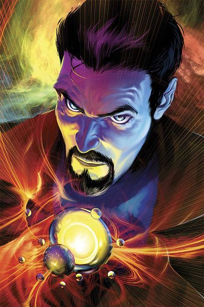
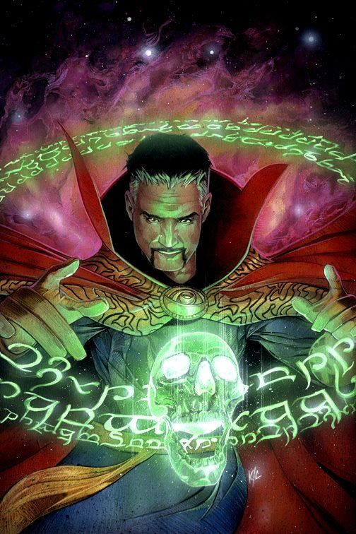
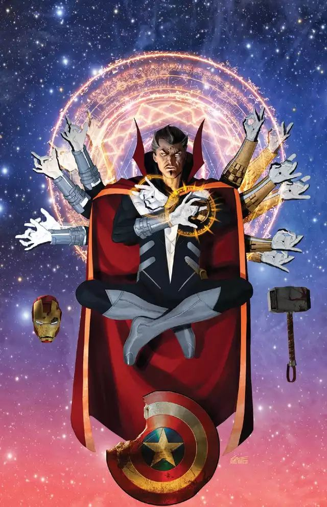
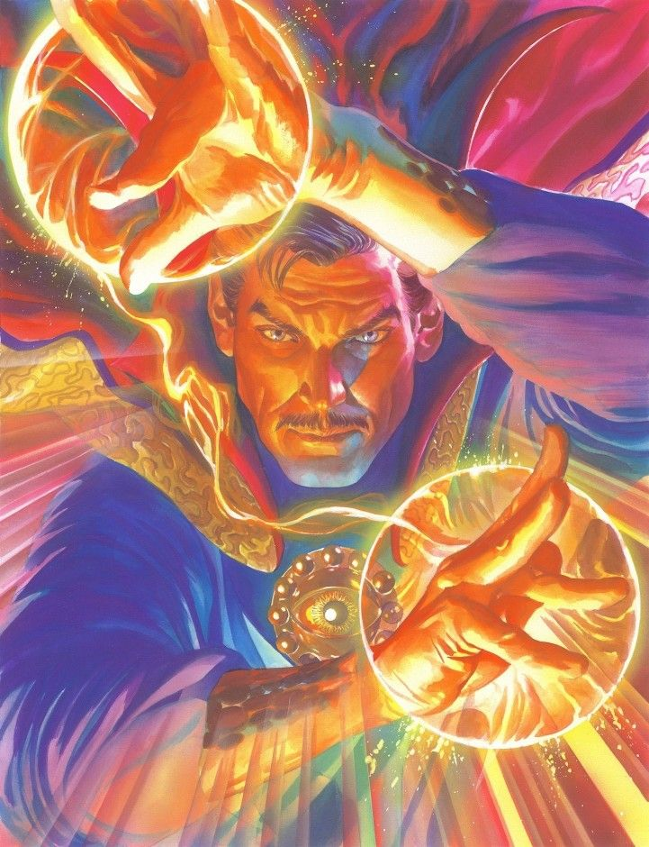
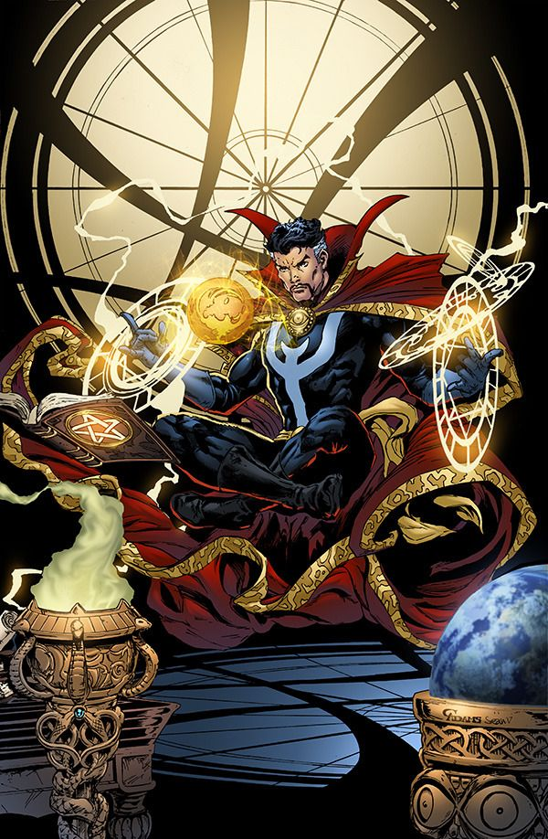
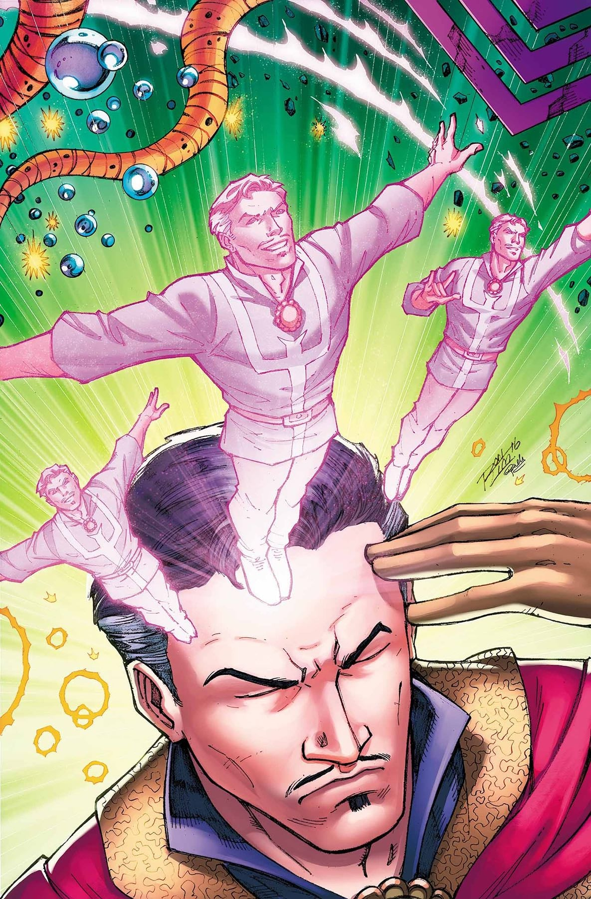
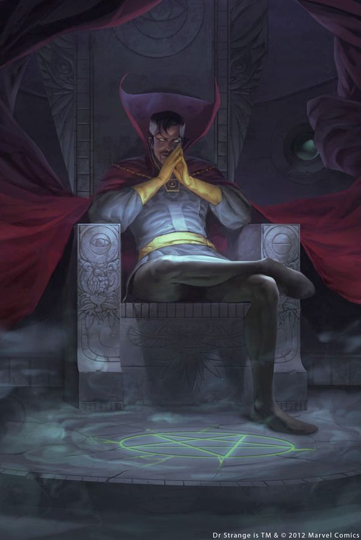
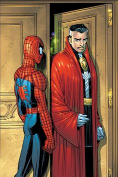
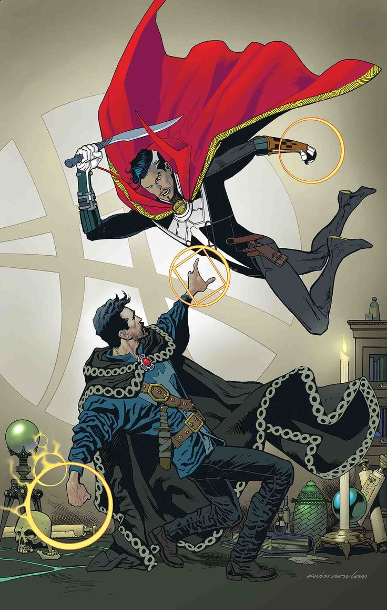
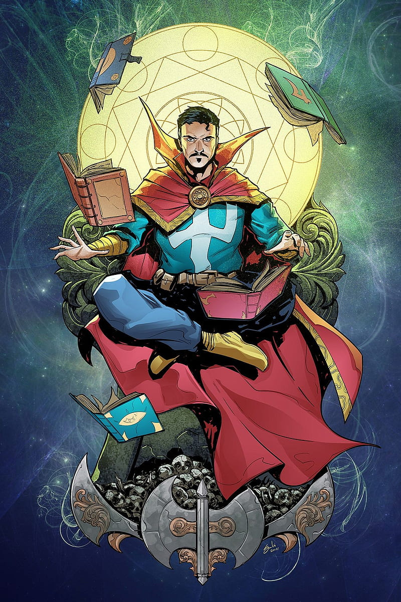
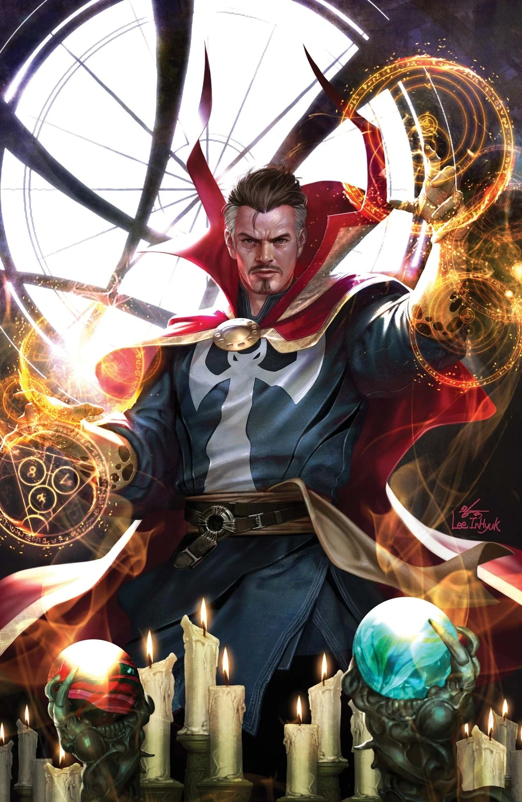
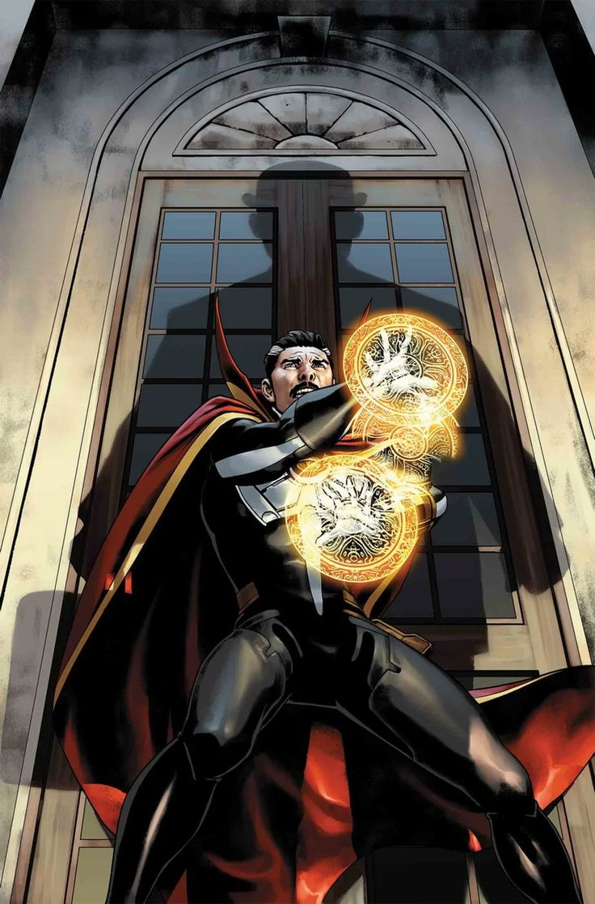
Personnalité :
Avant son accident, Strange avait un énorme ego, et était très vaniteux et arrogant. Mais bien qu'il puisse paraître absolument détestable, au fond de lui il se soucie de sauver les gens.
Cependant, après son accident et son entraînement chez l'Ancien, il développa un certain sens de la justice et il a de bonnes intentions. Il fait passer la sécurité du plus grand monde en premier plan, plutôt que de ne sauver qu'une personne qui pourrait lui être importante. Il possède également une grande maturité et une grande intelligence. Il est par ailleurs très sage et est un excellent leader et stratège.
Capacités et équipement :
Le Dr. Strange possède plusieurs artefacts liés au mystique, comme :
-La Cape de lévitation (lui permettant de voler et quasiment indestructible),
-L’œil d'Agamotto (une amulette dont la lumière permet de repousser la magie noire ou maléfique),
-Le livre des Vishanti (un grimoire qui contient l'ensemble des connaissances en magie blanche du multivers)
-Ou encore l'orbe d'Agamotto (une boule de cristal qui lui sert à la clairvoyance ou pour surveiller les dimensions voisines).
Il a une grande maîtrise des arts mystiques et de la magie, pouvoirs qu'il tire en partie d'entités mystiques telle que Agamotto, Cyttorak, Oshtur, Dormammu etc., celles-ci lui permettant de puiser dans leur énergie pour lancer des sorts, mais, il maîtrise les arts martiaux, ce qui lui permet de se défendre sans avoir recours à sa magie.
Il peut manipuler l'énergie qui l'entoure pour obtenir divers effets, comme de la protection en invoquant des boucliers.
Il possède une vaste connaissance sur de nombreux sortilèges et incantations, lui permettant d'invoquer des objets ou des entités mystiques, et maîtrise la télépathie, la projection astrale, l'hypnose, ainsi que la télékinésie et la téléportation.

Costume :
La plupart du temps, Strange porte sa cape de lévitation autour de lui, ainsi que l’œil d'Agamotto autour de son cou. Il porte également des gants, cachant ses mains blessées par son accident de voiture.
Les principaux ennemis du Docteur Strange


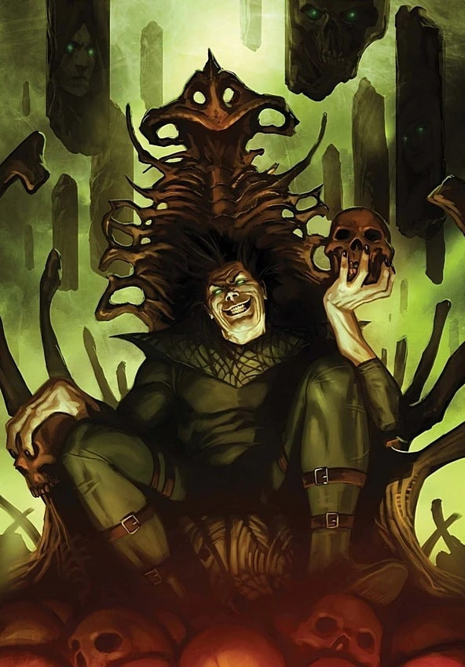
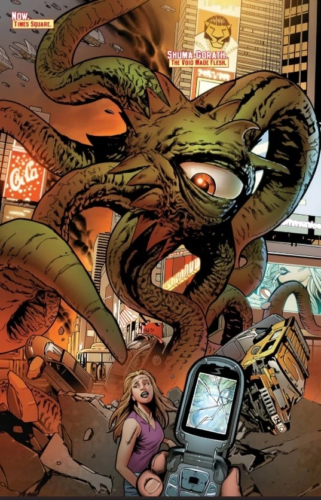
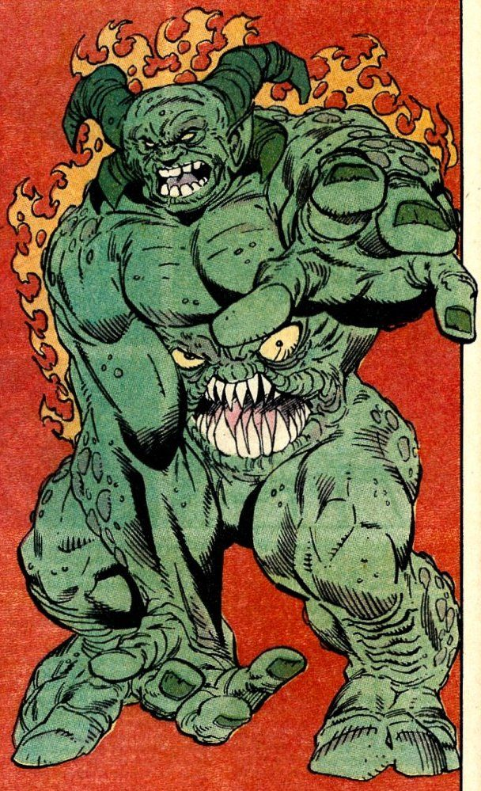
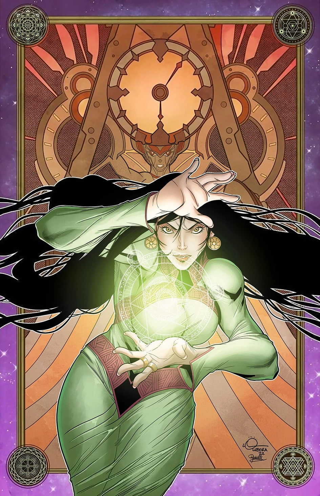
Équipes affiliées